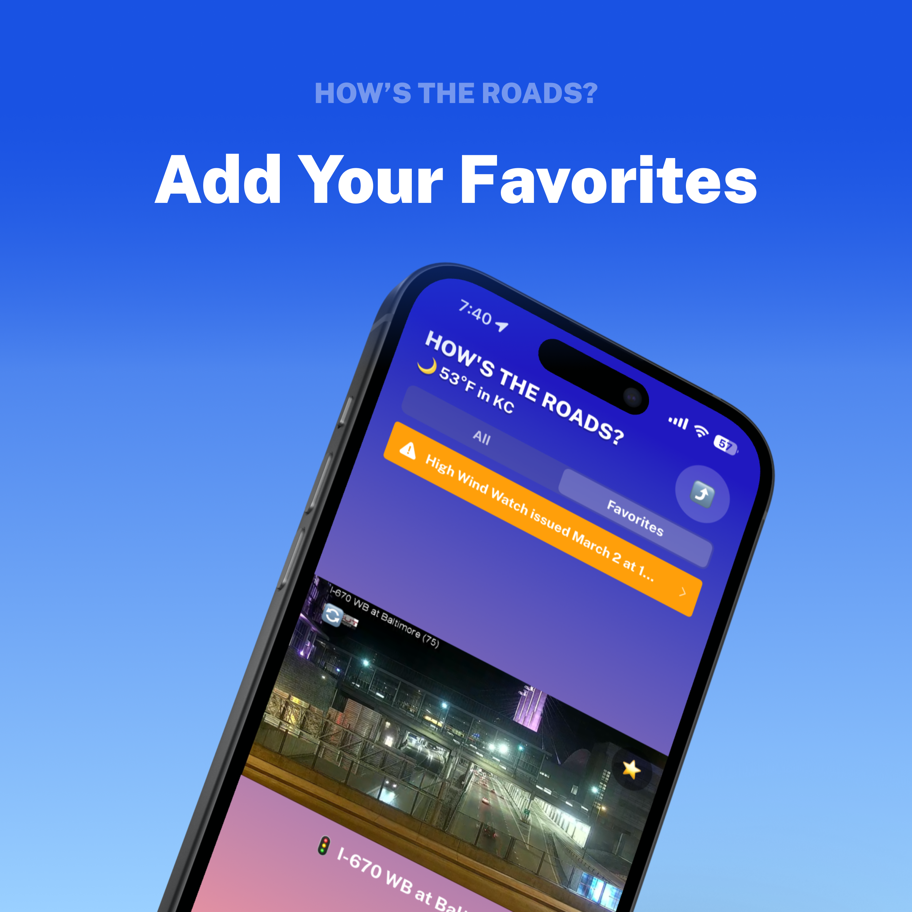
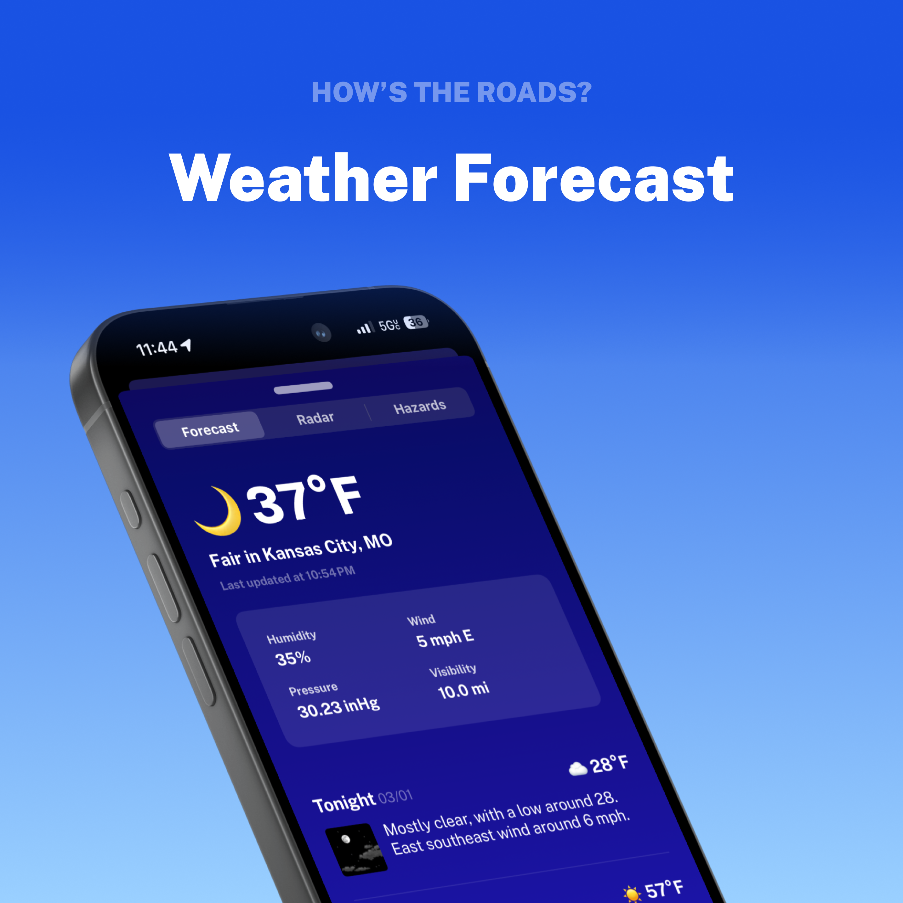

How's the roads?
Live Traffic Cameras & Road Conditions in Kansas City
Download on the App Store

Your go-to app for real-time traffic updates around Kansas City. Whether you're commuting, running errands, or planning your route, this app provides instant access to live feeds from traffic cameras across the metro area.
feedback • ✌️ safe travels kc